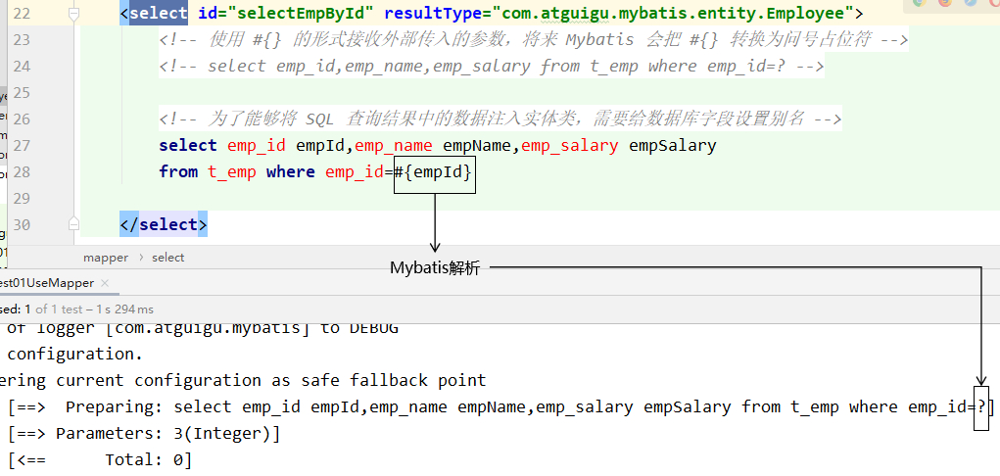
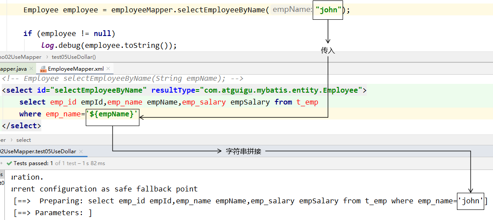
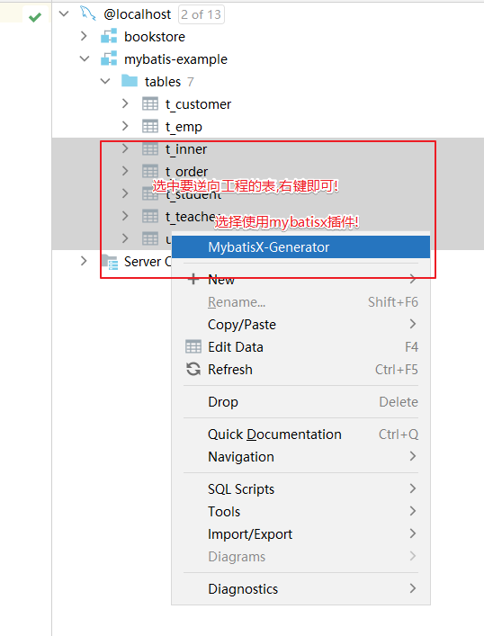

MyBatis 核心功能与进阶用法全解析，涵盖配置文件结构、基本 CRUD 操作、多表关联映射、动态 SQL 编写技巧，以及插件机制等高级扩展能力，助力高效构建持久层数据访问逻辑。
一、Mybatis简介
1.1 简介
https://mybatis.org/mybatis-3/zh/index.html
MyBatis最初是Apache的一个开源项目iBatis, 2010年6月这个项目由Apache Software Foundation迁移到了Google Code。随着开发团队转投Google Code旗下， iBatis3.x正式更名为MyBatis。代码于2013年11月迁移到Github。
MyBatis 是一款优秀的持久层框架，它支持自定义 SQL、存储过程以及高级映射。MyBatis 免除了几乎所有的 JDBC 代码以及设置参数和获取结果集的工作。MyBatis 可以通过简单的 XML 或注解来配置和映射原始类型、接口和 Java POJO（Plain Old Java Objects，普通老式 Java 对象）为数据库中的记录。
社区会持续更新开源项目，版本会不断变化，我们不必每个小版本都追，关注重大更新的大版本升级即可。
本课程使用：3.5.11版本
1.2 持久层框架对比
- JDBC
- SQL 夹杂在Java代码中耦合度高，导致硬编码内伤
- 维护不易且实际开发需求中 SQL 有变化，频繁修改的情况多见
- 代码冗长，开发效率低
- Hibernate 和 JPA
- 操作简便，开发效率高
- 程序中的长难复杂 SQL 需要绕过框架
- 内部自动生成的 SQL，不容易做特殊优化
- 基于全映射的全自动框架，大量字段的 POJO 进行部分映射时比较困难。
- 反射操作太多，导致数据库性能下降
- MyBatis
- 轻量级，性能出色
- SQL 和 Java 编码分开，功能边界清晰。Java代码专注业务、SQL语句专注数据
- 开发效率稍逊于 Hibernate，但是完全能够接收
开发效率：Hibernate>Mybatis>JDBC
运行效率：JDBC>Mybatis>Hibernate
1.3 快速入门（基于Mybatis3方式）
准备数据模型
1
2
3
4
5
6
7
8
9
10
11
12
13
14CREATE DATABASE `mybatis-example`;
USE `mybatis-example`;
CREATE TABLE `t_emp`(
emp_id INT AUTO_INCREMENT,
emp_name CHAR(100),
emp_salary DOUBLE(10,5),
PRIMARY KEY(emp_id)
);
INSERT INTO `t_emp`(emp_name,emp_salary) VALUES("tom",200.33);
INSERT INTO `t_emp`(emp_name,emp_salary) VALUES("jerry",666.66);
INSERT INTO `t_emp`(emp_name,emp_salary) VALUES("andy",777.77);项目搭建和准备
项目搭建
依赖导入
pom.xml
1
2
3
4
5
6
7
8
9
10
11
12
13
14
15
16
17
18
19
20
21
22<dependencies>
<!-- mybatis依赖 -->
<dependency>
<groupId>org.mybatis</groupId>
<artifactId>mybatis</artifactId>
<version>3.5.11</version>
</dependency>
<!-- MySQL驱动 mybatis底层依赖jdbc驱动实现,本次不需要导入连接池,mybatis自带! -->
<dependency>
<groupId>mysql</groupId>
<artifactId>mysql-connector-java</artifactId>
<version>8.0.25</version>
</dependency>
<!--junit5测试-->
<dependency>
<groupId>org.junit.jupiter</groupId>
<artifactId>junit-jupiter-api</artifactId>
<version>5.3.1</version>
</dependency>
</dependencies>实体类准备
1
2
3
4
5
6
7
8
9
10public class Employee {
private Integer empId;
private String empName;
private Double empSalary;
//getter | setter
}
准备Mapper接口和MapperXML文件
MyBatis 框架下，SQL语句编写位置发生改变，从原来的Java类，改成XML或者注解定义！
推荐在XML文件中编写SQL语句，让用户能更专注于 SQL 代码，不用关注其他的JDBC代码。(如果拿它跟具有相同功能的 JDBC 代码进行对比，你会立即发现省掉了将近 95% 的代码！！)
一般编写SQL语句的文件命名：XxxMapper.xml Xxx一般取表名！！
Mybatis 中的 Mapper 接口相当于以前的 Dao。但是区别在于，Mapper 仅仅只是建接口即可，我们不需要提供实现类，具体的SQL写到对应的Mapper文件，该用法的思路如下图所示：

定义mapper接口
包：com.atguigu.mapper
1
2
3
4
5
6
7
8
9
10
11
12
13
14
15
16
17
18
19package com.atguigu.mapper;
import com.atguigu.pojo.Employee;
/**
* t_emp表对应数据库SQL语句映射接口!
* 接口只规定方法,参数和返回值!
* mapper.xml中编写具体SQL语句!
*/
public interface EmployeeMapper {
/**
* 根据员工id查询员工数据方法
* @param empId 员工id
* @return 员工实体对象
*/
Employee selectEmployee(Integer empId);
}定义mapper xml
位置： resources/mappers/EmployeeMapper.xml
1
2
3
4
5
6
7
8
9
10
11
12
13
14
15
16
17
18
<!-- namespace等于mapper接口类的全限定名,这样实现对应 -->
<mapper namespace="com.atguigu.mapper.EmployeeMapper">
<!-- 查询使用 select标签
id = 方法名
resultType = 返回值类型
标签内编写SQL语句
-->
<select id="selectEmployee" resultType="com.atguigu.pojo.Employee">
<!-- #{empId}代表动态传入的参数,并且进行赋值!后面详细讲解 -->
select emp_id empId,emp_name empName, emp_salary empSalary from
t_emp where emp_id = #{empId}
</select>
</mapper>注意：
- 方法名和SQL的id一致(方法不能进行重载，否则XML文件识别不了)
- 方法返回值和resultType一致
- 方法的参数和SQL的参数一致
- 接口的全类名和映射配置文件的名称空间一致
准备MyBatis配置文件
mybatis框架配置文件： 数据库连接信息，性能配置，mapper.xml配置等！
习惯上命名为 mybatis-config.xml，这个文件名仅仅只是建议，并非强制要求。将来整合 Spring 之后，这个配置文件可以省略，所以大家操作时可以直接复制、粘贴。
1
2
3
4
5
6
7
8
9
10
11
12
13
14
15
16
17
18
19
20
21
22
23
24
25
26
27
28
29
30
31
32
<configuration>
<!-- environments表示配置Mybatis的开发环境，可以配置多个环境，在众多具体环境中，使用default属性指定实际运行时使用的环境。default属性的取值是environment标签的id属性的值。 -->
<environments default="development">
<!-- environment表示配置Mybatis的一个具体的环境 -->
<environment id="development">
<!-- Mybatis的内置的事务管理器 -->
<transactionManager type="JDBC"/>
<!-- 配置数据源 -->
<dataSource type="POOLED">
<!-- 建立数据库连接的具体信息 -->
<property name="driver" value="com.mysql.cj.jdbc.Driver"/>
<property name="url" value="jdbc:mysql://localhost:3306/mybatis-example"/>
<property name="username" value="root"/>
<property name="password" value="root"/>
</dataSource>
</environment>
</environments>
<mappers>
<!-- Mapper注册：指定Mybatis映射文件的具体位置 -->
<!-- mapper标签：配置一个具体的Mapper映射文件 -->
<!-- resource属性：指定Mapper映射文件的实际存储位置，这里需要使用一个以类路径根目录为基准的相对路径 -->
<!-- 对Maven工程的目录结构来说，resources目录下的内容会直接放入类路径，所以这里我们可以以resources目录为基准 -->
<mapper resource="mappers/EmployeeMapper.xml"/>
</mappers>
</configuration>运行和测试
1
2
3
4
5
6
7
8
9
10
11
12
13
14
15
16
17
18
19
20
21
22
23
24
25
26
27
28
29
30
31
32
33
34
35
36
37/**
* projectName: com.atguigu.test
*
* description: 测试类
*/
public class MyBatisTest {
public void testSelectEmployee() throws IOException {
// 1.创建SqlSessionFactory对象
// ①声明Mybatis全局配置文件的路径
String mybatisConfigFilePath = "mybatis-config.xml";
// ②以输入流的形式加载Mybatis配置文件
InputStream inputStream = Resources.getResourceAsStream(mybatisConfigFilePath);
// ③基于读取Mybatis配置文件的输入流创建SqlSessionFactory对象
SqlSessionFactory sessionFactory = new SqlSessionFactoryBuilder().build(inputStream);
// 2.使用SqlSessionFactory对象开启一个会话
SqlSession session = sessionFactory.openSession();
// 3.根据EmployeeMapper接口的Class对象获取Mapper接口类型的对象(动态代理技术)
EmployeeMapper employeeMapper = session.getMapper(EmployeeMapper.class);
// 4. 调用代理类方法既可以触发对应的SQL语句
Employee employee = employeeMapper.selectEmployee(1);
System.out.println("employee = " + employee);
// 4.关闭SqlSession
session.commit(); //提交事务 [DQL不需要,其他需要]
session.close(); //关闭会话
}
}说明：
- SqlSession：代表Java程序和数据库之间的会话。（HttpSession是Java程序和浏览器之间的会话）
- SqlSessionFactory：是“生产”SqlSession的“工厂”。
- 工厂模式：如果创建某一个对象，使用的过程基本固定，那么我们就可以把创建这个对象的相关代码封装到一个“工厂类”中，以后都使用这个工厂类来“生产”我们需要的对象。
SqlSession和HttpSession区别
- HttpSession：工作在Web服务器上，属于表述层。
- 代表浏览器和Web服务器之间的会话。
- SqlSession：不依赖Web服务器，属于持久化层。
- 代表Java程序和数据库之间的会话。

- 代表Java程序和数据库之间的会话。
- HttpSession：工作在Web服务器上，属于表述层。


二、MyBatis基本使用
2.1 向SQL语句传参
2.1.1 mybatis日志输出配置
mybatis配置文件设计标签和顶层结构如下：
- configuration（配置）
- properties（属性）
- settings（设置）
- typeAliases（类型别名）
- typeHandlers（类型处理器）
- objectFactory（对象工厂）
- plugins（插件）
- environments（环境配置）
- environment（环境变量）
- transactionManager（事务管理器）
- dataSource（数据源）
- environment（环境变量）
- databaseIdProvider（数据库厂商标识）
- mappers（映射器）
我们可以在mybatis的配置文件使用settings标签设置，输出运过程SQL日志！
通过查看日志，我们可以判定#{} 和 ${}的输出效果！
日志配置：
1 | <settings> |
2.1.2 #{}形式
Mybatis会将SQL语句中的#{}转换为问号占位符。

2.1.3 ${}形式
${}形式传参，底层Mybatis做的是字符串拼接操作。

通常不会采用${}的方式传值。一个特定的适用场景是：通过Java程序动态生成数据库表，表名部分需要Java程序通过参数传入；而JDBC对于表名部分是不能使用问号占位符的，此时只能使用
结论：实际开发中，能用#{}实现的，肯定不用${}。
特殊情况： 动态的不是值，是列名或者关键字，需要使用${}拼接
1 | //注解方式传入参数！！ |
2.2 数据输入
2.2.1 Mybatis总体机制概括
2.2.2 概念说明
这里数据输入具体是指上层方法（例如Service方法）调用Mapper接口时，数据传入的形式。
- 简单类型：只包含一个值的数据类型
- 基本数据类型：int、byte、short、double、……
- 基本数据类型的包装类型：Integer、Character、Double、……
- 字符串类型：String
- 复杂类型：包含多个值的数据类型
- 实体类类型：Employee、Department、……
- 集合类型：List、Set、Map、……
- 数组类型：int[]、String[]、……
- 复合类型：List<Employee>、实体类中包含集合……
2.2.3 单个简单类型参数
Mapper接口中抽象方法的声明
1 | Employee selectEmployee(Integer empId); |
SQL语句
1 | <select id="selectEmployee" resultType="com.atguigu.mybatis.entity.Employee"> |
单个简单类型参数，在#{}中可以随意命名，但通常还是使用对应接口方法参数名。
2.2.4 实体类类型参数
Mapper接口中抽象方法的声明
1 | int insertEmployee(Employee employee); |
SQL语句
1 | <insert id="insertEmployee"> |
对应关系
Mybatis会根据#{}中传入的数据，加工成getXxx()方法。
通过反射在实体类对象中调用这个方法，从而获取到对应的数据。
填充到#{}解析后的问号占位符这个位置。
2.2.5 零散的简单类型数据
零散的多个简单类型参数，如果没有特殊处理，那么Mybatis无法识别自定义名称：

Mapper接口中抽象方法的声明
1 | int updateEmployee( Integer empId, Double empSalary); |
SQL语句
1 | <update id="updateEmployee"> |
对应关系
2.2.6 Map类型参数
Mapper接口中抽象方法的声明
1 | int updateEmployeeByMap(Map<String, Object> paramMap); |
SQL语句
1 | <update id="updateEmployeeByMap"> |
junit测试
1 | private SqlSession session; |
对应关系
#{}中写Map中的key
使用场景
有很多零散的参数需要传递，但是没有对应的实体类类型可以使用。使用@Param注解一个一个传入又太麻烦了。所以都封装到Map中。
2.3数据输出
2.3.1 输出概述
数据输出总体上有两种形式：
增删改操作（DML）返回的受影响行数：直接使用 int 或 long 类型接收即可- 查询操作（DQL）的查询结果
我们需要做的是，指定查询的输出数据类型即可！
并且插入场景下，实现主键数据回显示！
2.3.2 单个简单类型
Mapper接口中的抽象方法
1 | int selectEmpCount(); |
SQL语句
1 | <select id="selectEmpCount" resultType="int"> |
Mybatis 内部给常用的数据类型设定了很多别名。 以 int 类型为例，可以写的名称有：int、integer、Integer、java.lang.Integer、Int、INT、INTEGER 等等。
junit测试
1 |
|
细节解释：
select标签，通过resultType指定查询返回值类型！
resultType = “全限定符 ｜ 别名 ｜ 如果是返回集合类型，写范型类型即可”
别名问题：
https://mybatis.org/mybatis-3/zh/configuration.html#typeAliases
类型别名可为 Java 类型设置一个缩写名字。 它仅用于 XML 配置，意在降低冗余的全限定类名书写。例如：
1 | <typeAliases> |
当这样配置时，Blog 可以用在任何使用
domain.blog.Blog 的地方。
也可以指定一个包名，MyBatis 会在包名下面搜索需要的 Java Bean，比如：
1 | <typeAliases> <package name="domain.blog"/> </typeAliases> |
每一个在包 domain.blog 中的 Java
Bean，在没有注解的情况下，会使用 Bean
的首字母小写的非限定类名来作为它的别名。 比如
domain.blog.Author 的别名为
author；若有注解，则别名为其注解值。见下面的例子：
1 |
|
下面是Mybatis为常见的 Java 类型内建的类型别名。它们都是不区分大小写的，注意，为了应对原始类型的命名重复，采取了特殊的命名风格。
| 别名 | 映射的类型 |
|---|---|
| _byte | byte |
| _char (since 3.5.10) | char |
| _character (since 3.5.10) | char |
| _long | long |
| _short | short |
| _int | int |
| _integer | int |
| _double | double |
| _float | float |
| _boolean | boolean |
| string | String |
| byte | Byte |
| char (since 3.5.10) | Character |
| character (since 3.5.10) | Character |
| long | Long |
| short | Short |
| int | Integer |
| integer | Integer |
| double | Double |
| float | Float |
| boolean | Boolean |
| date | Date |
| decimal | BigDecimal |
| bigdecimal | BigDecimal |
| biginteger | BigInteger |
| object | Object |
| object[] | Object[] |
| map | Map |
| hashmap | HashMap |
| list | List |
| arraylist | ArrayList |
| collection | Collection |
2.3.3 返回实体类对象
Mapper接口的抽象方法
1 | Employee selectEmployee(Integer empId); |
SQL语句
1 | <!-- 编写具体的SQL语句，使用id属性唯一的标记一条SQL语句 --> |
通过给数据库表字段加别名，让查询结果的每一列都和Java实体类中属性对应起来。
增加全局配置自动识别对应关系
在 Mybatis 全局配置文件中，做了下面的配置，select语句中可以不给字段设置别名
1 | <!-- 在全局范围内对Mybatis进行配置 --> |
2.3.4 返回Map类型
适用于SQL查询返回的各个字段综合起来并不和任何一个现有的实体类对应，没法封装到实体类对象中。能够封装成实体类类型的，就不使用Map类型。
Mapper接口的抽象方法
1 | Map<String,Object> selectEmpNameAndMaxSalary(); |
SQL语句
1 | <!-- Map<String,Object> selectEmpNameAndMaxSalary(); --> |
junit测试
1 |
|
2.3.5 返回List类型
查询结果返回多个实体类对象，希望把多个实体类对象放在List集合中返回。
此时不需要任何特殊处理，在resultType属性中还是设置List中存放的实体类类型即可。
Mapper接口中抽象方法
1 | List<Employee> selectAll(); |
SQL语句
1 | <!-- List<Employee> selectAll(); --> |
junit测试
1 |
|
2.3.6 返回主键值
自增长类型主键
Mapper接口中的抽象方法
1
int insertEmployee(Employee employee);
SQL语句
1
2
3
4
5
6
7<!-- int insertEmployee(Employee employee); -->
<!-- useGeneratedKeys属性字面意思就是“使用生成的主键” -->
<!-- keyProperty属性可以指定主键在实体类对象中对应的属性名，Mybatis会将拿到的主键值存入这个属性 -->
<insert id="insertEmployee" useGeneratedKeys="true" keyProperty="empId">
insert into t_emp(emp_name,emp_salary)
values(#{empName},#{empSalary})
</insert>junit测试
1
2
3
4
5
6
7
8
9
public void testSaveEmp() {
EmployeeMapper employeeMapper = session.getMapper(EmployeeMapper.class);
Employee employee = new Employee();
employee.setEmpName("john");
employee.setEmpSalary(666.66);
employeeMapper.insertEmployee(employee);
log.info("employee.getEmpId() = " + employee.getEmpId());
}Mybatis是将自增主键的值设置到实体类对象中，而不是以Mapper接口方法返回值的形式返回。
非自增长类型主键
而对于不支持自增型主键的数据库（例如 Oracle）或者字符串类型主键，则可以使用 selectKey 子元素：selectKey 元素将会首先运行，id 会被设置，然后插入语句会被调用！
使用
selectKey帮助插入UUID作为字符串类型主键示例：1
2
3
4
5
6
7
8
9
10
11
12
13<insert id="insertUser" parameterType="User">
<selectKey keyProperty="id" resultType="java.lang.String"
order="BEFORE">
SELECT UUID() as id
</selectKey>
INSERT INTO user (id, username, password)
VALUES (
#{id},
#{username},
#{password}
)
</insert>在上例中，我们定义了一个
insertUser的插入语句来将User对象插入到user表中。我们使用selectKey来查询 UUID 并设置到id字段中。通过
keyProperty属性来指定查询到的 UUID 赋值给对象中的id属性，而resultType属性指定了 UUID 的类型为java.lang.String。需要注意的是，我们将
selectKey放在了插入语句的前面，这是因为 MySQL 在insert语句中只支持一个select子句，而selectKey中查询 UUID 的语句就是一个select子句，因此我们需要将其放在前面。最后，在将
User对象插入到user表中时，我们直接使用对象中的id属性来插入主键值。使用这种方式，我们可以方便地插入 UUID 作为字符串类型主键。当然，还有其他插入方式可以使用，如使用Java代码生成UUID并在类中显式设置值等。需要根据具体应用场景和需求选择合适的插入方式。
2.3.7 实体类属性和数据库字段对应关系
别名对应
将字段的别名设置成和实体类属性一致。
1
2
3
4
5
6
7
8
9<!-- 编写具体的SQL语句，使用id属性唯一的标记一条SQL语句 -->
<!-- resultType属性：指定封装查询结果的Java实体类的全类名 -->
<select id="selectEmployee" resultType="com.atguigu.mybatis.entity.Employee">
<!-- Mybatis负责把SQL语句中的#{}部分替换成“?”占位符 -->
<!-- 给每一个字段设置一个别名，让别名和Java实体类中属性名一致 -->
select emp_id empId,emp_name empName,emp_salary empSalary from t_emp where emp_id=#{maomi}
</select>关于实体类属性的约定： getXxx()方法、setXxx()方法把方法名中的get或set去掉，首字母小写。
全局配置自动识别驼峰式命名规则
在Mybatis全局配置文件加入如下配置：
1
2
3
4
5
6
7<!-- 使用settings对Mybatis全局进行设置 -->
<settings>
<!-- 将xxx_xxx这样的列名自动映射到xxXxx这样驼峰式命名的属性名 -->
<setting name="mapUnderscoreToCamelCase" value="true"/>
</settings>SQL语句中可以不使用别名
1
2
3
4
5
6<!-- Employee selectEmployee(Integer empId); -->
<select id="selectEmployee" resultType="com.atguigu.mybatis.entity.Employee">
select emp_id,emp_name,emp_salary from t_emp where emp_id=#{empId}
</select>使用resultMap
使用resultMap标签定义对应关系，再在后面的SQL语句中引用这个对应关系
1
2
3
4
5
6
7
8
9
10
11
12
13
14
15
16
17
18
19
20<!-- 专门声明一个resultMap设定column到property之间的对应关系 -->
<resultMap id="selectEmployeeByRMResultMap" type="com.atguigu.mybatis.entity.Employee">
<!-- 使用id标签设置主键列和主键属性之间的对应关系 -->
<!-- column属性用于指定字段名；property属性用于指定Java实体类属性名 -->
<id column="emp_id" property="empId"/>
<!-- 使用result标签设置普通字段和Java实体类属性之间的关系 -->
<result column="emp_name" property="empName"/>
<result column="emp_salary" property="empSalary"/>
</resultMap>
<!-- Employee selectEmployeeByRM(Integer empId); -->
<select id="selectEmployeeByRM" resultMap="selectEmployeeByRMResultMap">
select emp_id,emp_name,emp_salary from t_emp where emp_id=#{empId}
</select>
2.4 CRUD强化练习
准备数据库数据
首先，我们需要准备一张名为
user的表。该表包含字段 id（主键）、username、password。创建SQL如下：1
2
3
4
5
6
7CREATE TABLE `user` (
`id` INT(11) NOT NULL AUTO_INCREMENT,
`username` VARCHAR(50) NOT NULL,
`password` VARCHAR(50) NOT NULL,
PRIMARY KEY (`id`)
) ENGINE=INNODB AUTO_INCREMENT=1 DEFAULT CHARSET=utf8;实体类准备
接下来，我们需要定义一个实体类
User，来对应 user 表的一行数据。1
2
3
4
5
6@Data //lombok
public class User {
private Integer id;
private String username;
private String password;
}Mapper接口定义
定义一个 Mapper 接口
UserMapper，并在其中添加 user 表的增、删、改、查方法。1
2
3
4
5
6
7
8
9
10
11
12public interface UserMapper {
int insert(User user);
int update(User user);
int delete(Integer id);
User selectById(Integer id);
List<User> selectAll();
}MapperXML编写
在 resources /mappers目录下创建一个名为
UserMapper.xml的 XML 文件，包含与 Mapper 接口中相同的五个 SQL 语句，并在其中，将查询结果映射到User实体中。1
2
3
4
5
6
7
8
9
10
11
12
13
14
15
16
17
18
19
20
21
22
23
24
25
26
27
28
29
30
31
32
<!-- namespace等于mapper接口类的全限定名,这样实现对应 -->
<mapper namespace="com.atguigu.mapper.UserMapper">
<!-- 定义一个插入语句，并获取主键值 -->
<insert id="insert" useGeneratedKeys="true" keyProperty="id">
INSERT INTO user(username, password)
VALUES(#{username}, #{password})
</insert>
<update id="update">
UPDATE user SET username=#{username}, password=#{password}
WHERE id=#{id}
</update>
<delete id="delete">
DELETE FROM user WHERE id=#{id}
</delete>
<!-- resultType使用user别名，稍后需要配置！-->
<select id="selectById" resultType="user">
SELECT id, username, password FROM user WHERE id=#{id}
</select>
<!-- resultType返回值类型为集合，所以只写范型即可！ -->
<select id="selectAll" resultType="user">
SELECT id, username, password FROM user
</select>
</mapper>MyBatis配置文件
位置：resources: mybatis-config.xml
1
2
3
4
5
6
7
8
9
10
11
12
13
14
15
16
17
18
19
20
21
22
23
24
25
26
27
28
29
30
31
32
33
34
35
36
37
38
39
40
41
42
43
44
<configuration>
<settings>
<!-- 开启驼峰式映射-->
<setting name="mapUnderscoreToCamelCase" value="true"/>
<!-- 开启logback日志输出-->
<setting name="logImpl" value="SLF4J"/>
</settings>
<typeAliases>
<!-- 给实体类起别名 -->
<package name="com.atguigu.pojo"/>
</typeAliases>
<!-- environments表示配置Mybatis的开发环境，可以配置多个环境，在众多具体环境中，使用default属性指定实际运行时使用的环境。default属性的取值是environment标签的id属性的值。 -->
<environments default="development">
<!-- environment表示配置Mybatis的一个具体的环境 -->
<environment id="development">
<!-- Mybatis的内置的事务管理器 -->
<transactionManager type="JDBC"/>
<!-- 配置数据源 -->
<dataSource type="POOLED">
<!-- 建立数据库连接的具体信息 -->
<property name="driver" value="com.mysql.cj.jdbc.Driver"/>
<property name="url" value="jdbc:mysql://localhost:3306/mybatis-example"/>
<property name="username" value="root"/>
<property name="password" value="root"/>
</dataSource>
</environment>
</environments>
<mappers>
<!-- Mapper注册：指定Mybatis映射文件的具体位置 -->
<!-- mapper标签：配置一个具体的Mapper映射文件 -->
<!-- resource属性：指定Mapper映射文件的实际存储位置，这里需要使用一个以类路径根目录为基准的相对路径 -->
<!-- 对Maven工程的目录结构来说，resources目录下的内容会直接放入类路径，所以这里我们可以以resources目录为基准 -->
<mapper resource="mappers/UserMapper.xml"/>
</mappers>
</configuration>效果测试
1
2
3
4
5
6
7
8
9
10
11
12
13
14
15
16
17
18
19
20
21
22
23
24
25
26
27
28
29
30
31
32
33
34
35
36
37
38
39
40
41
42
43
44
45
46
47
48
49
50
51
52
53
54
55
56
57
58
59
60
61
62
63
64
65
66
67
68
69
70
71
72
73
74
75
76
77
78
79
80
81package com.atguigu.test;
import com.atguigu.mapper.UserMapper;
import com.atguigu.pojo.User;
import org.apache.ibatis.io.Resources;
import org.apache.ibatis.session.SqlSession;
import org.apache.ibatis.session.SqlSessionFactoryBuilder;
import org.junit.jupiter.api.AfterEach;
import org.junit.jupiter.api.BeforeEach;
import org.junit.jupiter.api.Test;
import java.io.IOException;
import java.util.List;
/**
* projectName: com.atguigu.test
*/
public class MyBatisTest {
private SqlSession session;
// junit会在每一个@Test方法前执行@BeforeEach方法
public void init() throws IOException {
session = new SqlSessionFactoryBuilder()
.build(
Resources.getResourceAsStream("mybatis-config.xml"))
.openSession();
}
public void createTest() {
User user = new User();
user.setUsername("admin");
user.setPassword("123456");
UserMapper userMapper = session.getMapper(UserMapper.class);
userMapper.insert(user);
System.out.println(user);
}
public void updateTest() {
UserMapper userMapper = session.getMapper(UserMapper.class);
User user = userMapper.selectById(1);
user.setUsername("root");
user.setPassword("111111");
userMapper.update(user);
user = userMapper.selectById(1);
System.out.println(user);
}
public void deleteTest() {
UserMapper userMapper = session.getMapper(UserMapper.class);
userMapper.delete(1);
User user = userMapper.selectById(1);
System.out.println("user = " + user);
}
public void selectByIdTest() {
UserMapper userMapper = session.getMapper(UserMapper.class);
User user = userMapper.selectById(1);
System.out.println("user = " + user);
}
public void selectAllTest() {
UserMapper userMapper = session.getMapper(UserMapper.class);
List<User> userList = userMapper.selectAll();
System.out.println("userList = " + userList);
}
// junit会在每一个@Test方法后执行@@AfterEach方法
public void clear() {
session.commit();
session.close();
}
}
2.5 mapperXML标签总结
MyBatis 的真正强大在于它的语句映射，这是它的魔力所在。由于它的异常强大，映射器的 XML 文件就显得相对简单。如果拿它跟具有相同功能的 JDBC 代码进行对比，你会立即发现省掉了将近 95% 的代码。MyBatis 致力于减少使用成本，让用户能更专注于 SQL 代码。
SQL 映射文件只有很少的几个顶级元素（按照应被定义的顺序列出）：
insert– 映射插入语句。update– 映射更新语句。delete– 映射删除语句。select– 映射查询语句。
select标签：
MyBatis 在查询和结果映射做了相当多的改进。一个简单查询的 select 元素是非常简单：
1 | <select id="selectPerson" |
这个语句名为 selectPerson，接受一个 int（或 Integer）类型的参数，并返回一个 HashMap 类型的对象，其中的键是列名，值便是结果行中的对应值。
注意参数符号：#{id} ${key}
MyBatis 创建一个预处理语句（PreparedStatement）参数，在 JDBC 中，这样的一个参数在 SQL 中会由一个“?”来标识，并被传递到一个新的预处理语句中，就像这样：
1 | // 近似的 JDBC 代码，非 MyBatis 代码... |
select 元素允许你配置很多属性来配置每条语句的行为细节：
| 属性 | 描述 |
|---|---|
id |
在命名空间中唯一的标识符，可以被用来引用这条语句。 |
resultType |
期望从这条语句中返回结果的类全限定名或别名。 注意，如果返回的是集合，那应该设置为集合包含的类型，而不是集合本身的类型。 resultType 和 resultMap 之间只能同时使用一个。 |
resultMap |
对外部 resultMap 的命名引用。结果映射是 MyBatis 最强大的特性，如果你对其理解透彻，许多复杂的映射问题都能迎刃而解。 resultType 和 resultMap 之间只能同时使用一个。 |
timeout |
这个设置是在抛出异常之前，驱动程序等待数据库返回请求结果的秒数。默认值为未设置（unset）（依赖数据库驱动）。 |
statementType |
可选 STATEMENT，PREPARED 或 CALLABLE。这会让 MyBatis 分别使用 Statement，PreparedStatement 或 CallableStatement，默认值：PREPARED。 |
insert, update 和 delete标签：
数据变更语句 insert，update 和 delete 的实现非常接近：
1 | <insert |
| 属性 | 描述 |
|---|---|
id |
在命名空间中唯一的标识符，可以被用来引用这条语句。 |
timeout |
这个设置是在抛出异常之前，驱动程序等待数据库返回请求结果的秒数。默认值为未设置（unset）（依赖数据库驱动）。 |
statementType |
可选 STATEMENT，PREPARED 或 CALLABLE。这会让 MyBatis 分别使用 Statement，PreparedStatement 或 CallableStatement，默认值：PREPARED。 |
useGeneratedKeys |
（仅适用于 insert 和 update）这会令 MyBatis 使用 JDBC 的 getGeneratedKeys 方法来取出由数据库内部生成的主键（比如：像 MySQL 和 SQL Server 这样的关系型数据库管理系统的自动递增字段），默认值：false。 |
keyProperty |
（仅适用于 insert 和 update）指定能够唯一识别对象的属性，MyBatis
会使用 getGeneratedKeys 的返回值或 insert 语句的 selectKey
子元素设置它的值，默认值：未设置（unset）。如果生成列不止一个，可以用逗号分隔多个属性名称。 |
keyColumn |
（仅适用于 insert 和 update）设置生成键值在表中的列名，在某些数据库（像 PostgreSQL）中，当主键列不是表中的第一列的时候，是必须设置的。如果生成列不止一个，可以用逗号分隔多个属性名称。 |
三、MyBatis多表映射
3.1 多表映射概念
多表查询结果映射思路
上面课程中，我全面讲解了单表的mybatis操作！但是开发中更多的是多表查询需求，这种情况我们如何让进行处理？
MyBatis 思想是：数据库不可能永远是你所想或所需的那个样子。 我们希望每个数据库都具备良好的第三范式或 BCNF 范式，可惜它们并不都是那样。 如果能有一种数据库映射模式，完美适配所有的应用程序查询需求，那就太好了，而 ResultMap 就是 MyBatis 就是完美答案。
官方例子：我们如何映射下面这个语句
1
2
3
4
5
6
7
8
9
10
11
12
13
14
15
16
17
18
19
20
21
22
23
24
25
26
27
28
29
30
31
32
33
34<!-- 非常复杂的语句 -->
<select id="selectBlogDetails" resultMap="detailedBlogResultMap">
select
B.id as blog_id,
B.title as blog_title,
B.author_id as blog_author_id,
A.id as author_id,
A.username as author_username,
A.password as author_password,
A.email as author_email,
A.bio as author_bio,
A.favourite_section as author_favourite_section,
P.id as post_id,
P.blog_id as post_blog_id,
P.author_id as post_author_id,
P.created_on as post_created_on,
P.section as post_section,
P.subject as post_subject,
P.draft as draft,
P.body as post_body,
C.id as comment_id,
C.post_id as comment_post_id,
C.name as comment_name,
C.comment as comment_text,
T.id as tag_id,
T.name as tag_name
from Blog B
left outer join Author A on B.author_id = A.id
left outer join Post P on B.id = P.blog_id
left outer join Comment C on P.id = C.post_id
left outer join Post_Tag PT on PT.post_id = P.id
left outer join Tag T on PT.tag_id = T.id
where B.id = #{id}
</select>你可能想把它映射到一个智能的对象模型，这个对象表示了一篇博客，它由某位作者所写，有很多的博文，每篇博文有零或多条的评论和标签。 我们先来看看下面这个完整的例子，它是一个非常复杂的结果映射（假设作者，博客，博文，评论和标签都是类型别名）。 虽然它看起来令人望而生畏，但其实非常简单。
1
2
3
4
5
6
7
8
9
10
11
12
13
14
15
16
17
18
19
20
21
22
23
24
25
26<!-- 非常复杂的结果映射 -->
<resultMap id="detailedBlogResultMap" type="Blog">
<constructor>
<idArg column="blog_id" javaType="int"/>
</constructor>
<result property="title" column="blog_title"/>
<association property="author" javaType="Author">
<id property="id" column="author_id"/>
<result property="username" column="author_username"/>
<result property="password" column="author_password"/>
<result property="email" column="author_email"/>
<result property="bio" column="author_bio"/>
<result property="favouriteSection" column="author_favourite_section"/>
</association>
<collection property="posts" ofType="Post">
<id property="id" column="post_id"/>
<result property="subject" column="post_subject"/>
<association property="author" javaType="Author"/>
<collection property="comments" ofType="Comment">
<id property="id" column="comment_id"/>
</collection>
<collection property="tags" ofType="Tag" >
<id property="id" column="tag_id"/>
</collection>
</collection>
</resultMap>你现在可能看不懂，接下来我们要学习将多表查询结果使用ResultMap标签映射到实体类对象上！
我们的学习目标：
多表查询语句使用
多表结果承接实体类设计
使用ResultMap完成多表结果映射
实体类设计方案
多表关系回顾：（双向查看）
一对一
夫妻关系，人和身份证号
一对多 | 多对一
用户和用户的订单，锁和钥匙
多对多
老师和学生，部门和员工
实体类设计关系(查询)：（单向查看）
对一 ： 夫妻一方对应另一方，订单对应用户都是对一关系
实体类设计：对一关系下，类中只要包含单个对方对象类型属性即可！
1
2
3
4
5
6
7
8
9
10
11
12
13
14
15public class Customer {
private Integer customerId;
private String customerName;
}
public class Order {
private Integer orderId;
private String orderName;
private Customer customer;// 体现的是对一的关系
}对多: 用户对应的订单，讲师对应的学生或者学生对应的讲师都是对多关系：
实体类设计：对多关系下，类中只要包含对方类型集合属性即可！
1
2
3
4
5
6
7
8
9
10
11
12
13
14
15
16public class Customer {
private Integer customerId;
private String customerName;
private List<Order> orderList;// 体现的是对多的关系
}
public class Order {
private Integer orderId;
private String orderName;
private Customer customer;// 体现的是对一的关系
}
//查询客户和客户对应的订单集合 不要管!
多表结果实体类设计小技巧：
对一，属性中包含对方对象
对多，属性中包含对方对象集合
只有真实发生多表查询时，才需要设计和修改实体类，否则不提前设计和修改实体类！
无论多少张表联查，实体类设计都是两两考虑!
在查询映射的时候，只需要关注本次查询相关的属性！
例如：查询订单和对应的客户，就不要关注客户中的订单集合！
多表映射案例准备
数据库：
1
2
3
4
5
6
7
8
9CREATE TABLE `t_customer` (`customer_id` INT NOT NULL AUTO_INCREMENT, `customer_name` CHAR(100), PRIMARY KEY (`customer_id`) );
CREATE TABLE `t_order` ( `order_id` INT NOT NULL AUTO_INCREMENT, `order_name` CHAR(100), `customer_id` INT, PRIMARY KEY (`order_id`) );
INSERT INTO `t_customer` (`customer_name`) VALUES ('c01');
INSERT INTO `t_order` (`order_name`, `customer_id`) VALUES ('o1', '1');
INSERT INTO `t_order` (`order_name`, `customer_id`) VALUES ('o2', '1');
INSERT INTO `t_order` (`order_name`, `customer_id`) VALUES ('o3', '1');实际开发时，一般在开发过程中，不给数据库表设置外键约束。 原因是避免调试不方便。 一般是功能开发完成，再加外键约束检查是否有bug。
实体类设计：
稍后会进行订单关联客户查询，也会进行客户关联订单查询，所以在这先练习设计
1
2
3
4
5
6
7
8
9
10
11
12
13
14
15
16
17
public class Customer {
private Integer customerId;
private String customerName;
private List<Order> orderList;// 体现的是对多的关系
}
public class Order {
private Integer orderId;
private String orderName;
private Customer customer;// 体现的是对一的关系
}
3.2 对一映射
需求说明
根据ID查询订单，以及订单关联的用户的信息！
OrderMapper接口
1
2
3public interface OrderMapper {
Order selectOrderWithCustomer(Integer orderId);
}OrderMapper.xml配置文件
1
2
3
4
5
6
7
8
9
10
11
12
13
14
15
16
17
18
19
20
21
22
23
24
25
26
27
28
29
30
31
32
33<!-- 创建resultMap实现“对一”关联关系映射 -->
<!-- id属性：通常设置为这个resultMap所服务的那条SQL语句的id加上“ResultMap” -->
<!-- type属性：要设置为这个resultMap所服务的那条SQL语句最终要返回的类型 -->
<resultMap id="selectOrderWithCustomerResultMap" type="order">
<!-- 先设置Order自身属性和字段的对应关系 -->
<id column="order_id" property="orderId"/>
<result column="order_name" property="orderName"/>
<!-- 使用association标签配置“对一”关联关系 -->
<!-- property属性：在Order类中对一的一端进行引用时使用的属性名 -->
<!-- javaType属性：一的一端类的全类名 -->
<association property="customer" javaType="customer">
<!-- 配置Customer类的属性和字段名之间的对应关系 -->
<id column="customer_id" property="customerId"/>
<result column="customer_name" property="customerName"/>
</association>
</resultMap>
<!-- Order selectOrderWithCustomer(Integer orderId); -->
<select id="selectOrderWithCustomer" resultMap="selectOrderWithCustomerResultMap">
SELECT order_id,order_name,c.customer_id,customer_name
FROM t_order o
LEFT JOIN t_customer c
ON o.customer_id=c.customer_id
WHERE o.order_id=#{orderId}
</select>Mybatis全局注册Mapper文件
1
2
3
4
5
6
7<!-- 注册Mapper配置文件：告诉Mybatis我们的Mapper配置文件的位置 -->
<mappers>
<!-- 在mapper标签的resource属性中指定Mapper配置文件以“类路径根目录”为基准的相对路径 -->
<mapper resource="mappers/OrderMapper.xml"/>
</mappers>junit测试程序
1
2
3
4
5
6
7
8
9
10
11
12
13
14
15
16
17
18
19
20
21
22
23
24
25
26
27
28
29
30
31
public class MyBatisTest {
private SqlSession session;
// junit会在每一个@Test方法前执行@BeforeEach方法
public void init() throws IOException {
session = new SqlSessionFactoryBuilder()
.build(
Resources.getResourceAsStream("mybatis-config.xml"))
.openSession();
}
public void testRelationshipToOne() {
OrderMapper orderMapper = session.getMapper(OrderMapper.class);
// 查询Order对象，检查是否同时查询了关联的Customer对象
Order order = orderMapper.selectOrderWithCustomer(2);
log.info("order = " + order);
}
// junit会在每一个@Test方法后执行@@AfterEach方法
public void clear() {
session.commit();
session.close();
}
}关键词
在“对一”关联关系中，我们的配置比较多，但是关键词就只有：association和javaType
3.3 对多映射
需求说明
查询客户和客户关联的订单信息！
CustomerMapper接口
1
2
3
4
5public interface CustomerMapper {
Customer selectCustomerWithOrderList(Integer customerId);
}CustomerMapper.xml文件
1
2
3
4
5
6
7
8
9
10
11
12
13
14
15
16
17
18
19
20
21
22
23
24
25
26
27
28
29
30
31
32<!-- 配置resultMap实现从Customer到OrderList的“对多”关联关系 -->
<resultMap id="selectCustomerWithOrderListResultMap"
type="customer">
<!-- 映射Customer本身的属性 -->
<id column="customer_id" property="customerId"/>
<result column="customer_name" property="customerName"/>
<!-- collection标签：映射“对多”的关联关系 -->
<!-- property属性：在Customer类中，关联“多”的一端的属性名 -->
<!-- ofType属性：集合属性中元素的类型 -->
<collection property="orderList" ofType="order">
<!-- 映射Order的属性 -->
<id column="order_id" property="orderId"/>
<result column="order_name" property="orderName"/>
</collection>
</resultMap>
<!-- Customer selectCustomerWithOrderList(Integer customerId); -->
<select id="selectCustomerWithOrderList" resultMap="selectCustomerWithOrderListResultMap">
SELECT c.customer_id,c.customer_name,o.order_id,o.order_name
FROM t_customer c
LEFT JOIN t_order o
ON c.customer_id=o.customer_id
WHERE c.customer_id=#{customerId}
</select>Mybatis全局注册Mapper文件
1
2
3
4
5
6<!-- 注册Mapper配置文件：告诉Mybatis我们的Mapper配置文件的位置 -->
<mappers>
<!-- 在mapper标签的resource属性中指定Mapper配置文件以“类路径根目录”为基准的相对路径 -->
<mapper resource="mappers/OrderMapper.xml"/>
<mapper resource="mappers/CustomerMapper.xml"/>
</mappers>junit测试程序
1
2
3
4
5
6
7
8
9
10
11
12
13
public void testRelationshipToMulti() {
CustomerMapper customerMapper = session.getMapper(CustomerMapper.class);
// 查询Customer对象同时将关联的Order集合查询出来
Customer customer = customerMapper.selectCustomerWithOrderList(1);
log.info("customer.getCustomerId() = " + customer.getCustomerId());
log.info("customer.getCustomerName() = " + customer.getCustomerName());
List<Order> orderList = customer.getOrderList();
for (Order order : orderList) {
log.info("order = " + order);
}
}关键词
在“对多”关联关系中，同样有很多配置，但是提炼出来最关键的就是：“collection”和“ofType”
3.4 多表映射总结
3.4.1 多表映射优化
| setting属性 | 属性含义 | 可选值 | 默认值 |
|---|---|---|---|
| autoMappingBehavior | 指定 MyBatis 应如何自动映射列到字段或属性。 NONE 表示关闭自动映射；PARTIAL 只会自动映射没有定义嵌套结果映射的字段。 FULL 会自动映射任何复杂的结果集（无论是否嵌套）。 | NONE, PARTIAL, FULL | PARTIAL |
我们可以将autoMappingBehavior设置为full,进行多表resultMap映射的时候，可以省略符合列和属性命名映射规则（列名=属性名，或者开启驼峰映射也可以自定映射）的result标签！
修改mybati-sconfig.xml:
1 | <!--开启resultMap自动映射 --> |
修改teacherMapper.xml
1 | <resultMap id="teacherMap" type="teacher"> |
3.4.2 多表映射总结
| 关联关系 | 配置项关键词 | 所在配置文件和具体位置 |
|---|---|---|
| 对一 | association标签/javaType属性/property属性 | Mapper配置文件中的resultMap标签内 |
| 对多 | collection标签/ofType属性/property属性 | Mapper配置文件中的resultMap标签内 |
四、MyBatis动态语句
4.1 动态语句需求和简介
经常遇到很多按照很多查询条件进行查询的情况，比如智联招聘的职位搜索等。其中经常出现很多条件不取值的情况，在后台应该如何完成最终的SQL语句呢？
动态 SQL 是 MyBatis 的强大特性之一。如果你使用过 JDBC 或其它类似的框架，你应该能理解根据不同条件拼接 SQL 语句有多痛苦，例如拼接时要确保不能忘记添加必要的空格，还要注意去掉列表最后一个列名的逗号。利用动态 SQL，可以彻底摆脱这种痛苦。
使用动态 SQL 并非一件易事，但借助可用于任何 SQL 映射语句中的强大的动态 SQL 语言，MyBatis 显著地提升了这一特性的易用性。
如果你之前用过 JSTL 或任何基于类 XML 语言的文本处理器，你对动态 SQL 元素可能会感觉似曾相识。在 MyBatis 之前的版本中，需要花时间了解大量的元素。借助功能强大的基于 OGNL 的表达式，MyBatis 3 替换了之前的大部分元素，大大精简了元素种类，现在要学习的元素种类比原来的一半还要少。
4.2 if和where标签
使用动态 SQL 最常见情景是根据条件包含 where / if 子句的一部分。比如：
1 | <!-- List<Employee> selectEmployeeByCondition(Employee employee); --> |
4.3 set标签
1 | <!-- void updateEmployeeDynamic(Employee employee) --> |
4.4 trim标签(了解)
使用trim标签控制条件部分两端是否包含某些字符
- prefix属性：指定要动态添加的前缀
- suffix属性：指定要动态添加的后缀
- prefixOverrides属性：指定要动态去掉的前缀，使用“|”分隔有可能的多个值
- suffixOverrides属性：指定要动态去掉的后缀，使用“|”分隔有可能的多个值
1 | <!-- List<Employee> selectEmployeeByConditionByTrim(Employee employee) --> |
4.5 choose/when/otherwise标签
在多个分支条件中，仅执行一个。
- 从上到下依次执行条件判断
- 遇到的第一个满足条件的分支会被采纳
- 被采纳分支后面的分支都将不被考虑
- 如果所有的when分支都不满足，那么就执行otherwise分支
1 | <!-- List<Employee> selectEmployeeByConditionByChoose(Employee employee) --> |
4.6 foreach标签
基本用法
用批量插入举例
1 | <!-- |
批量更新时需要注意
上面批量插入的例子本质上是一条SQL语句，而实现批量更新则需要多条SQL语句拼起来，用分号分开。也就是一次性发送多条SQL语句让数据库执行。此时需要在数据库连接信息的URL地址中设置：
1 | atguigu.dev.url=jdbc:mysql:///mybatis-example?allowMultiQueries=true |
对应的foreach标签如下：
1 | <!-- int updateEmployeeBatch(@Param("empList") List<Employee> empList) --> |
关于foreach标签的collection属性
如果没有给接口中List类型的参数使用@Param注解指定一个具体的名字，那么在collection属性中默认可以使用collection或list来引用这个list集合。
这一点可以通过异常信息看出来：
1 | Parameter 'empList' not found. Available parameters are [arg0, collection, list] |
在实际开发中，为了避免隐晦的表达造成一定的误会，建议使用@Param注解明确声明变量的名称，然后在foreach标签的collection属性中按照@Param注解指定的名称来引用传入的参数。
4.7 sql片段
抽取重复的SQL片段
1 | <!-- 使用sql标签抽取重复出现的SQL片段 --> |
引用已抽取的SQL片段
1 | <!-- 使用include标签引用声明的SQL片段 --> |
五、MyBatis高级扩展
5.1 Mapper批量映射优化
需求
Mapper 配置文件很多时，在全局配置文件中一个一个注册太麻烦，希望有一个办法能够一劳永逸。
配置方式
Mybatis 允许在指定 Mapper 映射文件时，只指定其所在的包：
1
2
3<mappers>
<package name="com.atguigu.mapper"/>
</mappers>此时这个包下的所有 Mapper 配置文件将被自动加载、注册，比较方便。
资源创建要求
resources下创建多个连续文件夹需要用“/”分割（org/example）。
Mapper 接口和 Mapper 配置文件名称一致
- Mapper 接口：EmployeeMapper.java
- Mapper 配置文件：EmployeeMapper.xml
Mapper 配置文件放在 Mapper 接口所在的包内
可以将mapperxml文件放在mapper接口所在的包！
可以在sources下创建mapper接口包一致的文件夹结构存放mapperxml文件（推荐）


5.2 插件和分页插件PageHelper
5.2.1 插件机制和PageHelper插件介绍
MyBatis 对插件进行了标准化的设计，并提供了一套可扩展的插件机制。插件可以在用于语句执行过程中进行拦截，并允许通过自定义处理程序来拦截和修改 SQL 语句、映射语句的结果等。
具体来说，MyBatis 的插件机制包括以下三个组件：
Interceptor（拦截器）：定义一个拦截方法intercept，该方法在执行 SQL 语句、执行查询、查询结果的映射时会被调用。Invocation（调用）：实际上是对被拦截的方法的封装，封装了Object target、Method method和Object[] args这三个字段。InterceptorChain（拦截器链）：对所有的拦截器进行管理，包括将所有的 Interceptor 链接成一条链，并在执行 SQL 语句时按顺序调用。
插件的开发非常简单，只需要实现 Interceptor 接口，并使用注解
@Intercepts 来标注需要拦截的对象和方法，然后在 MyBatis
的配置文件中添加插件即可。
PageHelper 是 MyBatis 中比较著名的分页插件，它提供了多种分页方式（例如 MySQL 和 Oracle 分页方式），支持多种数据库，并且使用非常简单。下面就介绍一下 PageHelper 的使用方式。
https://github.com/pagehelper/Mybatis-PageHelper/blob/master/wikis/zh/HowToUse.md#如何配置数据库方言
5.2.2 PageHelper插件使用
pom.xml引入依赖
1
2
3
4
5<dependency>
<groupId>com.github.pagehelper</groupId>
<artifactId>pagehelper</artifactId>
<version>5.1.11</version>
</dependency>mybatis-config.xml配置分页插件
在 MyBatis 的配置文件中添加 PageHelper 的插件：
1
2
3
4
5<plugins>
<plugin interceptor="com.github.pagehelper.PageInterceptor">
<property name="helperDialect" value="mysql"/>
</plugin>
</plugins>
其中，com.github.pagehelper.PageInterceptor 是
PageHelper 插件的名称，dialect
属性用于指定数据库类型（支持多种数据库）
页插件使用
在查询方法中使用分页：
1
2
3
4
5
6
7
8
9
10
11
12
13
14
15
16
17
18
19
20
21
22
23
24
25
public void testTeacherRelationshipToMulti() {
TeacherMapper teacherMapper = session.getMapper(TeacherMapper.class);
PageHelper.startPage(1,2);
// 查询Customer对象同时将关联的Order集合查询出来
List<Teacher> allTeachers = teacherMapper.findAllTeachers();
PageInfo<Teacher> pageInfo = new PageInfo<>(allTeachers);
System.out.println("pageInfo = " + pageInfo);
long total = pageInfo.getTotal(); // 获取总记录数
System.out.println("total = " + total);
int pages = pageInfo.getPages(); // 获取总页数
System.out.println("pages = " + pages);
int pageNum = pageInfo.getPageNum(); // 获取当前页码
System.out.println("pageNum = " + pageNum);
int pageSize = pageInfo.getPageSize(); // 获取每页显示记录数
System.out.println("pageSize = " + pageSize);
List<Teacher> teachers = pageInfo.getList(); //获取查询页的数据集合
System.out.println("teachers = " + teachers);
teachers.forEach(System.out::println);
}
5.3 逆向工程和MybatisX插件
5.3.1 ORM思维介绍
ORM（Object-Relational Mapping，对象-关系映射）是一种将数据库和面向对象编程语言中的对象之间进行转换的技术。它将对象和关系数据库的概念进行映射，最后我们就可以通过方法调用进行数据库操作!!
最终: 让我们可以使用面向对象思维进行数据库操作！！！
ORM 框架通常有半自动和全自动两种方式。
- 半自动 ORM 通常需要程序员手动编写 SQL 语句或者配置文件，将实体类和数据表进行映射，还需要手动将查询的结果集转换成实体对象。
- 全自动 ORM 则是将实体类和数据表进行自动映射，使用 API 进行数据库操作时，ORM 框架会自动执行 SQL 语句并将查询结果转换成实体对象，程序员无需再手动编写 SQL 语句和转换代码。
下面是半自动和全自动 ORM 框架的区别：
- 映射方式：半自动 ORM 框架需要程序员手动指定实体类和数据表之间的映射关系，通常使用 XML 文件或注解方式来指定；全自动 ORM 框架则可以自动进行实体类和数据表的映射，无需手动干预。
- 查询方式：半自动 ORM 框架通常需要程序员手动编写 SQL 语句并将查询结果集转换成实体对象；全自动 ORM 框架可以自动组装 SQL 语句、执行查询操作，并将查询结果转换成实体对象。
- 性能：由于半自动 ORM 框架需要手动编写 SQL 语句，因此程序员必须对 SQL 语句和数据库的底层知识有一定的了解，才能编写高效的 SQL 语句；而全自动 ORM 框架通过自动优化生成的 SQL 语句来提高性能，程序员无需进行优化。
- 学习成本：半自动 ORM 框架需要程序员手动编写 SQL 语句和映射配置，要求程序员具备较高的数据库和 SQL 知识；全自动 ORM 框架可以自动生成 SQL 语句和映射配置，程序员无需了解过多的数据库和 SQL 知识。
常见的半自动 ORM 框架包括 MyBatis 等；常见的全自动 ORM 框架包括 Hibernate、Spring Data JPA、MyBatis-Plus 等。
5.3.2 逆向工程
MyBatis 的逆向工程是一种自动化生成持久层代码和映射文件的工具，它可以根据数据库表结构和设置的参数生成对应的实体类、Mapper.xml 文件、Mapper 接口等代码文件，简化了开发者手动生成的过程。逆向工程使开发者可以快速地构建起 DAO 层，并快速上手进行业务开发。 MyBatis 的逆向工程有两种方式：通过 MyBatis Generator 插件实现和通过 Maven 插件实现。无论是哪种方式，逆向工程一般需要指定一些配置参数，例如数据库连接 URL、用户名、密码、要生成的表名、生成的文件路径等等。 总的来说，MyBatis 的逆向工程为程序员提供了一种方便快捷的方式，能够快速地生成持久层代码和映射文件，是半自动 ORM 思维像全自动发展的过程，提高程序员的开发效率。
注意：逆向工程只能生成单表crud的操作，多表查询依然需要我们自己编写！
5.3.3 逆向工程插件MyBatisX使用
MyBatisX 是一个 MyBatis 的代码生成插件，可以通过简单的配置和操作快速生成 MyBatis Mapper、pojo 类和 Mapper.xml 文件。下面是使用 MyBatisX 插件实现逆向工程的步骤：
安装插件：
在 IntelliJ IDEA 中打开插件市场，搜索 MyBatisX 并安装。
使用 IntelliJ IDEA连接数据库
连接数据库
填写信息

展示库表

逆向工程使用


查看生成结果

逆向工程案例使用
正常使用即可，自动生成单表的crud方法！
1
2
3
4
5
6
7
8
9
10
11
12
13
14
15
16
17
18
19
20
21
22
23
24
25
26package com.atguigu.mapper;
import com.atguigu.pojo.User;
/**
* @author Jackiechan
* @description 针对表【user】的数据库操作Mapper
* @createDate 2023-06-02 16:55:32
* @Entity com.atguigu.pojo.User
*/
public interface UserMapper {
int deleteByPrimaryKey(Long id);
int insert(User record);
int insertSelective(User record);
User selectByPrimaryKey(Long id);
int updateByPrimaryKeySelective(User record);
int updateByPrimaryKey(User record);
}


六、MyBatis总结
| 核心点 | 掌握目标 |
|---|---|
| mybatis基础 | 使用流程, 参数输入,#{} ${},参数输出 |
| mybatis多表 | 实体类设计,resultMap多表结果映射 |
| mybatis动态语句 | Mybatis动态语句概念, where , if , foreach标签 |
| mybatis扩展 | Mapper批量处理,分页插件,逆向工程 |